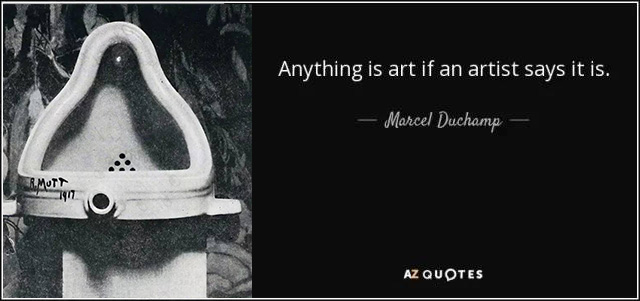

Xintong
Is it Art?
Due Date: Oct,27 2020
Introducion
Today I tried to appreciate this old dirty sink in the corner with the perspective of appreciating contemporary art.

Unknown, An old sink, 2020, installation view, 240 x 60 x 120 cm
photograph by Xintong Wang in Oct 2020, B102, Academy of Arts & Design, Tsinghua University
Inspiration
After the major studio this morning, I stayed a little bit longer in our classroom to loiter about and wait for my afternoon courses. While sitting there, I found that I can't help staring at this sink. In a certain sense, this sink is quite artistic, its relationship between the composition of the countertop and the ground is interesting, the structure seems very harmonious. It’s also kind of elegant I think, even qualified to be a set of sketch still life.
Prototype
My gaze line
Thoughts popping up
1. How long has it been placed here?
2. Is it happening art? Does it become happening art at the moment I think it can be regarded as a work of art?
3. How did the traces on the wall shaped? Why do these streamlined ink stains appear?
4. There are vestiges in the bottom of it, what have people washed within it?
5. The paper towel on the countertop is obviously not used to clean the sink, it seems just been thrown here.
6. What brand of wash sink is this?
7. This socket looks very rebellious, half covered by the countertop, still pops out firmly. Why is it designed like this?
8. What is the connection between this sink and the round cover on its right?
9. This is the collection of the memes people left in this room.
10. If I do treat it as a work of contemporary art to appreciate, what kind of perspective shall I hold?
11.This sink is actually a time-based work, generated naturally in this space.
Keywords of the sink: marginalized, neglected, artistic, polluted, full of vicissitudes.
Artistic Fragments

Somebody washed palette here, Trace #1 #2 #3 #4, 2020, random watercolor
photograph by Xintong Wang in Oct 2020, The wall behind the sink
Somebody stepped on the countertop, Footprint, 2020, dirt, 15 x 19 cm
photograph by Xintong Wang in Oct 2020, front of the countertop
Rebellion, 2020, socket, 8.5 x 6 cm
photograph by Xintong Wang in Oct 2020, half inside of the countertop
Temporal legacy, 2020, dirty outfall, 5 x 5 cm
photograph by Xintong Wang in Oct 2020, inside the sink
Counting down, 2020, dripping water, flexible
photograph by Xintong Wang in Oct 2020, from the tap of the sink
Reflection
If a sink is only regarded as a sink, it will always remain an article for daily use, but if one observes it from another perspective, it can be something else.
Marcel Duchamp: "Anything is art if an artist says it is."
